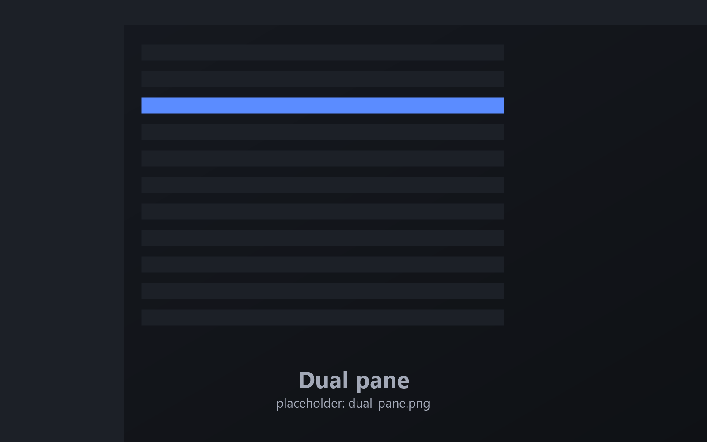

Two panes, or four
Work side by side in dual panes, or split the window into a 2×2 grid. Copy or move to the other pane with a single key. Tabs support groups, pinning and tear-off windows, and any layout can be saved as a workspace.
F9 dual paneShiftF9 quadF5 copy acrossF6 move across
